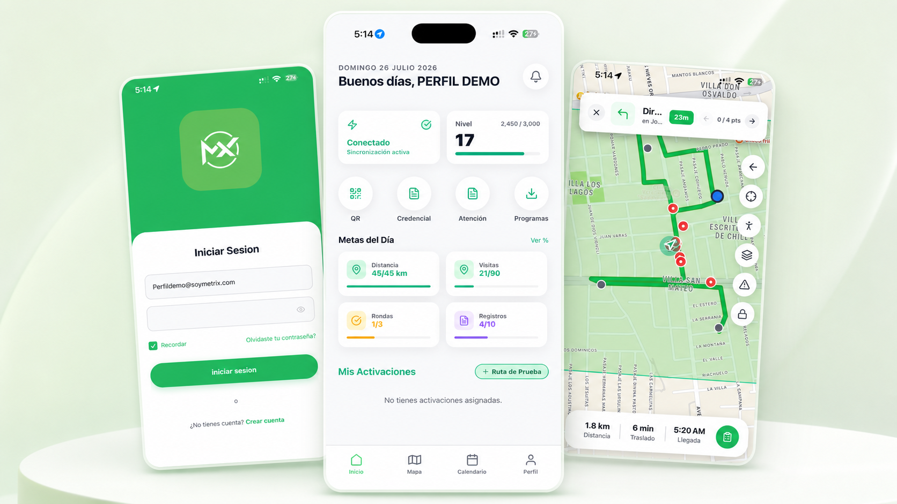

SaaS · Product Design · Web/Mobile
SaaS · Product Design · Web/Mobile
Wippy
Plataforma SaaS que permite a pequeños negocios crear catálogos digitales, gestionar productos y recibir pedidos estructurados mediante WhatsApp.
Ver caso completo →Product Designer · Santiago de Chile
Product Designer con más de 4 años creando productos SaaS, experiencias móviles y plataformas web. Combino pensamiento de producto, diseño de interfaces y conocimiento técnico para construir soluciones claras y viables junto a equipos de desarrollo.

Casos de estudio donde combiné pensamiento UX, diseño de sistemas y viabilidad técnica.
SaaS · Product Design · Web/Mobile
Plataforma SaaS que permite a pequeños negocios crear catálogos digitales, gestionar productos y recibir pedidos estructurados mediante WhatsApp.
Ver caso completo →
Mobile · Map Experience · Product DesignAplicación móvil para ejecutar y supervisar rondas operativas mediante mapas, puntos geolocalizados, incidencias y seguimiento de progreso en terreno.
Ver caso completo → Fintech · Dashboard · Product Design
Fintech · Dashboard · Product Design
Plataforma financiera para visualizar inversiones, activos bajo custodia, rendimiento y movimientos mediante una interfaz orientada a claridad y control.
Ver caso completo →
Plataforma web de catálogos digitales interactivos para negocios. Interfaz responsive y optimizada para una navegación ágil.
Visitar sitio web ↗
Experiencia de comercio electrónico B2B para distribuidores y clientes mayoristas.
Visitar sitio web ↗Diseño de productos digitales para founders y empresas, participando en definición de alcance, arquitectura de información, UX/UI, prototipado, sistemas de diseño, entrega a desarrollo y validación de viabilidad técnica.
Prioridad en diseño de producto y usabilidad, con respaldo de conocimientos técnicos de implementación.
Conocimiento práctico para validar viabilidad técnica e integrarse con ingeniería.
Product Designer
Soy Samuel Casaran, Product Designer radicado en Santiago de Chile. Durante más de cuatro años he participado en la creación de productos SaaS, aplicaciones móviles, plataformas fintech y experiencias de comercio electrónico.
Mi experiencia implementando software me permite diseñar considerando restricciones reales, evaluar viabilidad y colaborar fluidamente con ingeniería. Actualmente busco integrarme a un equipo de producto donde pueda participar desde la definición del problema hasta la entrega y evolución de la solución.
Actualmente busco oportunidades como Product Designer.
Contacto Profesional
Disponible para integrarme a equipos de producto.